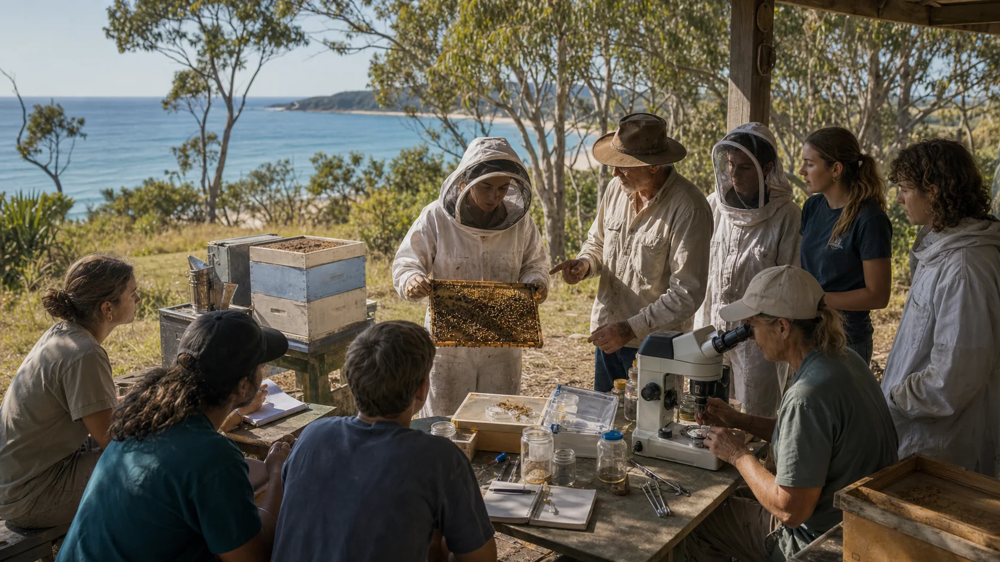

Bee Resilience Institute
A not-for-profit institute can run workshops, field days, citizen science, school programs and partner-led training without pretending to be a university.

The long dream can stay alive without jumping the queue. A practical institute can teach, convene, run citizen science and partner with registered providers long before anyone talks about university status.
Grow in order
In Australia, higher education and university status are regulated. A believable path could build capability, co-op stewardship, teaching quality and research partnerships first.
A not-for-profit institute can run workshops, field days, citizen science, school programs and partner-led training without pretending to be a university.
Students from partner institutions learn with local beekeepers, researchers, Traditional Custodians and community allies inside a co-op stewardship model.
If governance, staff, policies, quality systems, finances and student support become real, independent registration could be explored.
If the institute earns credibility over time, it could investigate category change under TEQSA rules.
If strong research, research training, academic governance, multiple disciplines and national standing become real, that claim could be tested carefully.
The learning can stay close to boots, bees, microscopes, community data and beekeeper judgement.
Plain version: build the institute people can use now, partner for accredited training where needed, and leave regulated higher education status for the long, lawful road.
Future schools
The future identity does not need to be just a bee school. It could become a grounded field of regenerative biosecurity, pollinator futures, island systems, natural products, data and civic science.
Regulated status
Any future higher education claim needs the current regulator pathway, not vibes. The source material points to initial registration, course accreditation, provider categories and research requirements as the serious checks.
What would a new provider need to show before offering its own accredited higher education course?
What kind of research quality and training expectations sit behind Australian university status?
If a provider matures, what process would apply to changing category later?